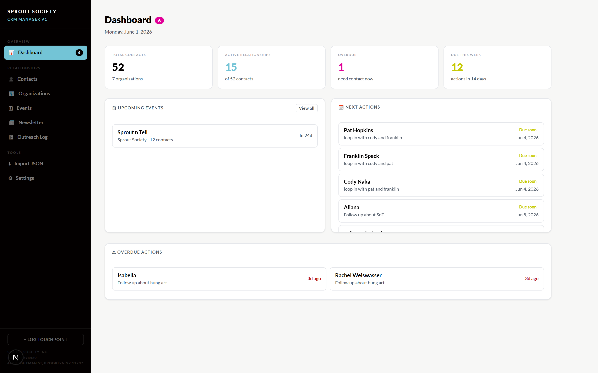
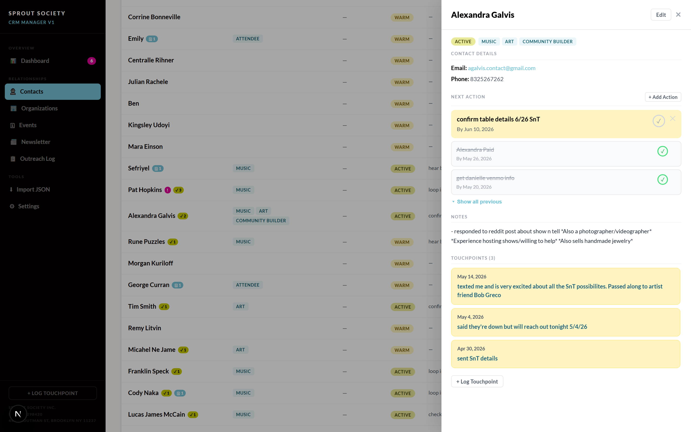
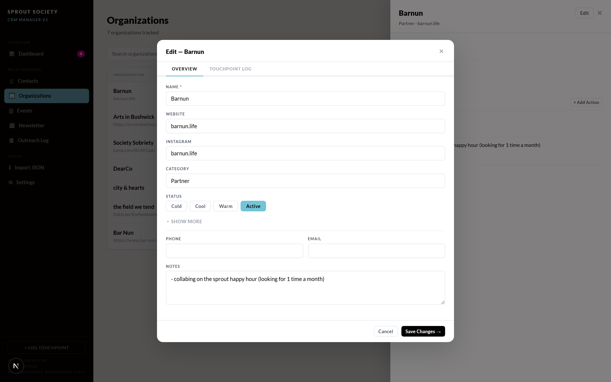
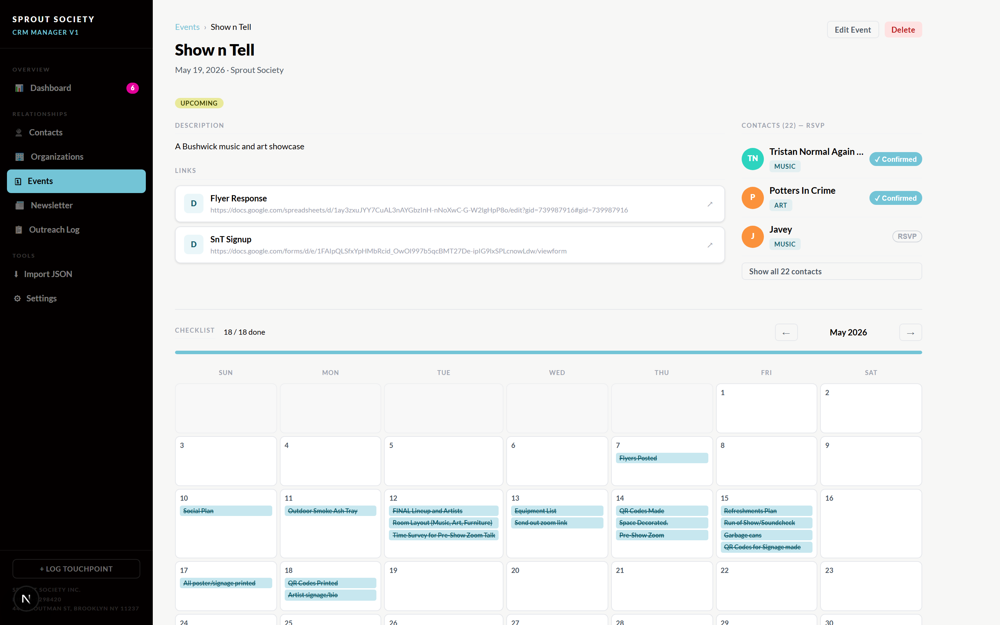
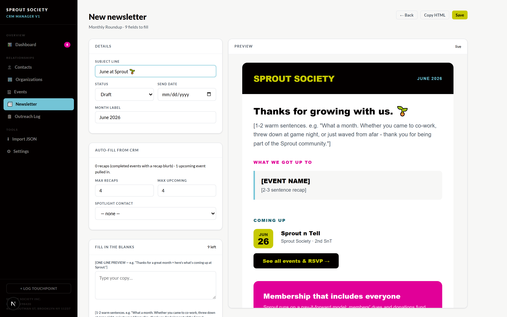
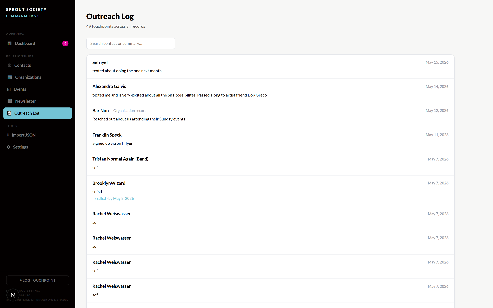
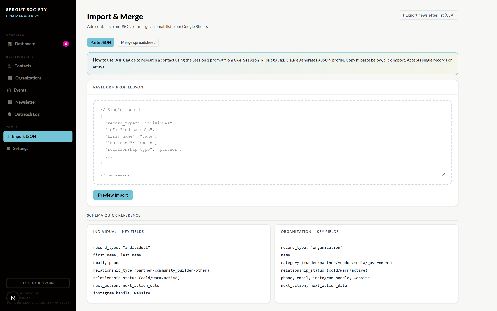

No tech experience needed. Every screen is labeled with sticky notes. Just scroll top to bottom.
📖 About 8 minutes
Part 1: A tour of every screen
1. The Dashboard
Your home screen. It answers: "What needs me today?"

1Your menu: click to switch screens
2Today at a glance
3What's coming up
4Who to contact next
5Late: do these first
6Log a chat from any screen
⚡ Ask ClaudeSkip the dashboard: just ask what needs you
You type
"What needs my attention this week?"
→
Sprout Society CRM
→
You get back
"3 contacts are overdue, 5 actions are due, and Show n Tell is in 4 days. Want me to draft the reminders?"
📧 From your inboxCatch the CRM up from your email
You type
"Give me a list of everyone who I've responded and not responded to in the last two weeks."
→
Sprout Society CRM
→
You get back
"I have created folders for both categories and placed the appropriate email chains in each one. Let me know if you'd like me to draft responses for any or all."
Card 1 of 3: tap › to see the Claude shortcuts
🖥️ The screenYour daily home base: overdue people, upcoming events, and what to do next.
⚡ Ask ClaudeAsk "what needs me this week?" and get the rundown without clicking.
📧 From your inboxClaude sorts who you've replied to (and haven't) into folders.
2. Contacts
Your full list of people (dimmed behind). Each column tells you something at a glance: click anyone to open their full record.

1Type
2Org affiliation
3Status
4Next action
5Contact health
⚡ Ask ClaudeAdd a person without filling out a single field
You type
"Add Alina from barnun happy hour. She's an artist interested in SnT."
→
Sprout Society CRM
→
You get back
New contact created and suggested next action. Let me know if you'd like to add or change anything.
📧 From your inboxTurn the people you email into contacts
You type
"Add everyone I've emailed back over the last month."
→
Sprout Society CRM
→
You get back
New people added as cool leads, anyone already in the CRM merged not duplicated. Promo and newsletter mail skipped.
Card 1 of 3: tap › to see the Claude shortcuts
🖥️ The screenEveryone you know, with their type, status, and next step at a glance.
⚡ Ask ClaudeAdd someone in plain English; Claude fills the record and suggests a follow-up.
📧 From your inboxTurn everyone you've emailed into contacts: merged, not duplicated.
3. Organizations
Same idea as Contacts, but for groups: venues, funders, partners. Click one, then Edit to update it.

1Name, website & socials
2What kind of group
3How warm (cold → active)
4Phone, email & notes
5Save your changes
⚡ Ask ClaudeLog a win on a group in one sentence
You type
"Barnun agreed to host a spring event. Create an event for this on 6/30. Suggest a checklist and add anyone associated with Barnun to the contact list."
→
Sprout Society CRM
→
You get back
Event page created, and here is the link. I also added the Google Sheets associated with this event to the links section. Let me know if you'd like anything else.
📧 From your inboxFile an email thread onto the right group
You type
"Draft a newsletter advertisement for the Barnun spring event."
→
Sprout Society CRM
→
You get back
A draft is saved in Newsletter drafts on the app. Feel free to edit and send. Or ask me to send it at a scheduled time.
Card 1 of 3: tap › to see the Claude shortcuts
🖥️ The screenGroups you work with: venues, funders, partners, and how warm each is.
⚡ Ask ClaudeLog a win or spin up an event for a group in one sentence.
📧 From your inboxTurn a group thread into a saved newsletter or outreach draft.
4. Events
Every gathering Sprout runs or attends. Click one to open it. Here's a real event.

1Name, date & status
2Who's coming: RSVPs
3Description & links
4Your planning checklist
⚡ Ask ClaudeGet the state of your events without opening them
You type
"Create a repeated Sprout n Tell event the fourth Friday of every month for the next 3 months."
→
Sprout Society CRM
→
You get back
Done. Let me know if you want to add any specific checklist or contacts. Or I can create suggested checklists to start from.
📧 From your inboxPull RSVPs straight out of your email
You type
"Find the RSVPs for Show n Tell in my inbox."
→
Sprout Society CRM
→
You get back
Each "I'll be there" matched to a contact (new ones created), the RSVP logged against Show n Tell.
Card 1 of 3: tap › to see the Claude shortcuts
🖥️ The screenEach gathering with its date, RSVPs, description, and planning checklist.
⚡ Ask ClaudeCreate events (even repeating ones) and get a starter checklist.
📧 From your inboxPull RSVPs out of email and log them against the event.
5. Newsletter
Build your email newsletter right inside the CRM. Fill in the blanks on the left and watch it come together on the right.

1Title, status & date
2Auto-fills your events
3Type your words in the blanks
4Live preview: updates as you type
5Copy → paste into Mailchimp
⚡ Ask ClaudeGet a first draft built from your real data
You type
"Start this month's newsletter for me."
→
Sprout Society CRM
→
You get back
A draft with recaps & events already filled in. Only the [bracketed] personal notes left for you.
📧 From your inboxSend the finished newsletter to everyone
You type
"Send the approved newsletter to our whole contact list."
→
Sprout Society CRM
→
You get back
"Done. Submitted through Mailchimp. Here's a link to the submission page."
Card 1 of 3: tap › to see the Claude shortcuts
1. Pick a layoutChoose one of the ready-made newsletter templates.
2. Fill the blanksType your words into the empty [bracketed] spots.
3. Copy HTMLCopy it out and paste into Mailchimp to send.
6. Outreach Log
One running feed of every conversation, across everyone.

1Search past chats
2Who + what happened
⚡ Ask ClaudeRecall your history with anyone, instantly
You type
"When did I last talk to Maya, and about what?"
→
Sprout Society CRM
→
You get back
"You DM'd Maya on May 20 about the pottery collab. She's a warm lead. Follow-up is due Friday."
📧 From your inboxYour email history becomes outreach history
You type
"Log my latest email exchange with Maya."
→
Sprout Society CRM
→
You get back
The email lands in this feed as a dated touchpoint, so the log holds your DMs, calls, and emails in one place.
Card 1 of 3: tap › to see the Claude shortcuts
🖥️ The screenOne running feed of every conversation, across everyone.
⚡ Ask ClaudeAsk when you last spoke to someone and what it was about.
📧 From your inboxLogged emails join your DMs and calls in the same history.
Entries appear here automatically each time you log a touchpoint. It's just for reading back over your history.
7. Import & Merge
Bring people in by the batch: paste a JSON record, or merge an email list from a spreadsheet.

1Two ways in: paste JSON or merge a sheet
2Paste a record here
3Preview before anything saves
4Field cheat-sheet
5Export your email list as CSV
⚡ Ask ClaudeImport a whole list without touching JSON
You type
"Here's a spreadsheet of 40 people from our last event. Add them all."
→
Sprout Society CRM
→
You get back
"Imported 38 new contacts as cool leads, 2 merged with existing records. None duplicated."
📧 From your inboxTurn an emailed sign-up list into contacts
You type
"Add the attendee list from the Eventbrite email into contacts."
→
Sprout Society CRM
→
You get back
"Parsed 24 attendees from the email and added them, merging anyone already on file."
Card 1 of 3: tap › to see the Claude shortcuts
🖥️ The screenBulk-add from pasted JSON, or merge an email list from Google Sheets.
⚡ Ask ClaudeHand Claude a list and it imports everyone, merging duplicates.
📧 From your inboxTurn an emailed attendee or sign-up list straight into contacts.